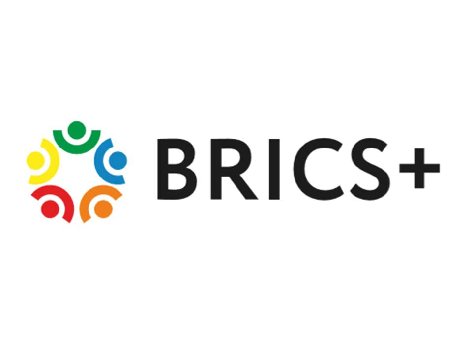
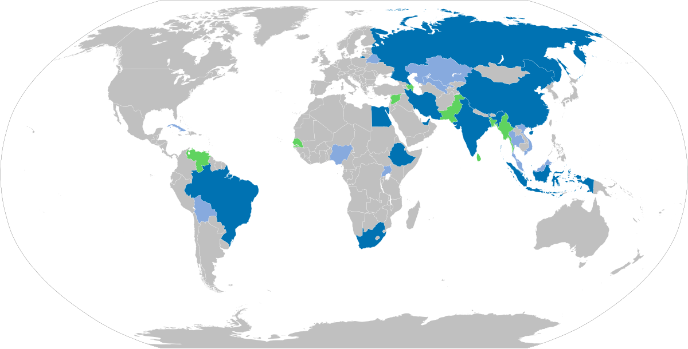

2006 : Première coopération BRIC
Les ministres des Affaires étrangères du Brésil, de la Russie, de l’Inde et de la Chine se réunissent pour la première fois à New York, posant les bases du futur groupe BRIC.

Le groupe BRICS+ réunit dix pays émergents : le Brésil, la Russie, l’Inde, la Chine, l’Afrique du Sud, l’Égypte, les Émirats arabes unis, l’Éthiopie, l’Iran et l’Indonésie. Ensemble, ils cherchent à renforcer leur influence sur la scène mondiale et à proposer une alternative au système économique international dominé par l’Occident.

| Année | Evenement | Details |
|---|---|---|
| 2006 | Première rencontre des ministres des BRIC | Voir sur Wikipédia |
| 2009 | Premier sommet officiel du BRIC à Ekaterinbourg | Voir sur Wikipédia |
| 2010 | Entrée de l'Afrique du sud | Lire sur France24 |
| 2023 | Extension vers BRICS+ | Article Le Monde |
Les ministres des Affaires étrangères du Brésil, de la Russie, de l’Inde et de la Chine se réunissent pour la première fois à New York, posant les bases du futur groupe BRIC.
Les chefs d’État se réunissent à Ekaterinbourg (Russie) pour le premier sommet officiel, marquant la création formelle du groupe BRIC.
Le BRIC devient BRICS, marquant l’entrée de l’Afrique du Sud comme cinquième membre.
En 2023, le groupe s’est élargi à plusieurs pays : Égypte, Émirats arabes unis, Éthiopie, Iran et Indonésie.